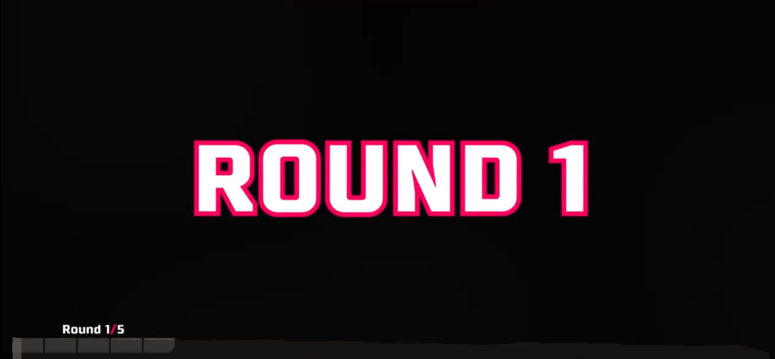

Hai người gặp nhau ở đâu ?
Thời gian tôi quen cô ấy tuy là ngắn nhưng lại mang lại cho tôi khá nhiều cảm xúc !
Ừm... thử bấm vào nick name (NH) Atila này xem nào
~~Bên kia bắt đầu đổ chuông...
Ồ em ý bắt máy rồi kìa !!!
Lúc đó thấy em cười tươi, duyên, nhìn cũng thích, nhìn cũng ưng. 🥰
Tôi : Hello em! Em có nhìn thấy bên anh không ?
Cô ấy : Em có
Tôi: Ừ anh có một trò chơi này muốn cho em xem, Em xem không ?
Cô ấy : gật gật, cười cười
Rồi thế là tôi chơi cho cô ấy xem, tôi để ý thấy cô ấy cũng đang xem tôi, cũng vẫn cười cười. Cuộc gọi đầu chỉ
diễn ra trong mấy phút vậy thôi đó. Nhưng tôi có cảm giác tôi sẽ gọi lại cho cô ấy vào lần sau.
Lần tiếp theo...
Tôi: Em còn nhớ anh không?
Cô ấy: Em nhớ chứ
Đúng vậy ! Tôi đã tìm tới cô ấy vào khung giờ khá muộn để chơi trò chơi đó. Kịch bản không khác lần đầu tiên là
mấy,
cũng chỉ ngắn gọn vậy thôi... Rồi cuộc gọi lại kết thúc. Và tôi vẫn có ý định gọi tiếp cho cô ấy vào lần sau.
Không hiểu là có sức hút gì ở đây nữa ý🤣🤣🤣
Lần thứ ba...
Để một khoảng thời gian lâu lâu sau.
Lần này có khác chút nè. Vì đã từng gặp và kết bạn trên đó để một phần nào giữ liên lạc với nhau. Trước khi tôi
gọi,
tôi nhắn tin cho cô ấy.
Tôi: Em còn nhớ anh không?
Cô ấy: Đùa em đang nhắc đến anh. Bảo lâu lắm rồi không thấy gọi cho em
Tôi: Em thích xem anh sóc tiếp như thế không?
Cô ấy: Em có
Đọc đến đấy chắc hẳn sẽ chẳng thấy có điểm gì ở đây cả. Tôi cũng vậy, tôi chỉ nghĩ là : ừ gọi chơi chơi nghịch
nghịch vài lần vậy thôi. Ở cái không gian ảo ảo thật thật này mình cũng làm sao mà biết được người ta trả lời có
thích là
thật hay không đâu.
----------------------------------
Diễn biến trò chơi qua mỗi lần gọi cho nhau là lại lâu hơn một chút so với các lần trước. Và đến lần thứ tư là lần
chơi
diễn ra lâu nhất. Chơi xong chúng tôi còn nói chuyện, hỏi han nhau, làm quen nhau bắt đầu từ đây.
----------------------------------
Gần năm tiếng nói chuyện, chỉa sẻ, tâm sự với nhau anh cảm thấy khá thoải mái. Hay nói cách khác là anh cũng có
đôi chút thích thích em rồi đấy
Em còn nói với anh là : Em mà có bạn trai em cũng thử chơi trò này
😮😮😮 Hay!
Sau khi em nói câu đó xong. Anh khá là ngạc nhiên và thấy ít ra có còn người hưởng ứng với anh. Chứ người khác
chắc
bảo anh dở hơi rồi đấy ( Mặc dù là anh chưa gặp trường hợp nào nhưng khả năng cao là thế )
Kể từ lần nói chuyển đó. Anh và em bắt đầu nói chuyện với nhau nhiều hơn, kể cho nhau nghe nhiều chuyện hơn ❤️
Tâm trạng, Cảm xúc
Anh là một người khá kém trong giao tiếp. Nhiều người đã nói anh rằng anh nhút nhát quá. Đoạn này anh nghĩ em
chẳng tin đâu. Nhưng không thực tế nó là như thế đấy. Khi chuyện trò với em qua điện thoại nó sẽ khác so với trực
tiếp.
Anh bị như thế là vì ngày còn bé, mỗi khi anh nói cái gì ra người ta cho anh là sai luôn. Ban đầu cũng có đấu
tranh lại một chút. Nhưng là vì người trong nhà nên càng về sau anh càng bớt tranh cãi đi. Cứ thế từ nhỏ hình
thành như vậy khiến anh cảm thấy mất đi cả sự tự tin cho đến bây giờ và anh chưa biết phải khắc phục nó thế nào.
Phải khắc phục được thì mới phát triển hơn được trong sự nghiệp và cuộc sống. Lúc nào cũng bị sợ cảm giác đấy.
Là một người sống khép kín, sống nội tâm. Nên anh cũng ít bạn bè, không nhiều mối quan hệ. Nhưng không sao anh lại
cảm thấy thích như thế hơn. Anh thường thích ở một mình, ngắm cảnh một mình, đi đâu đó một mình. Anh thích sự yên
tĩnh của ban đêm.
Đợt gần đây anh đã được trải nghiệm một mình một bãi biển. Ôi cái cảm giác đấy thích lắm em ạ. Không khí trong
lành, không phải chen chúc. Nhìn ra xa mà chẳng bị cái gì che tầm mắt cả.
Anh sẽ nói thêm về anh sau nhé.
Sau một thời gian ngắn gặp em, nói chuyện với em. Anh cũng bắt đầu mê em rồi đây. Anh dùng đúng
từ của em nhé 🤣. Em bảo không khéo em mê anh rồi ý thì em mới chịu khó gọi điện cho anh thế này chứ. Nghe xong
lại
càng thích hơn chứ 🥰.
Tâm trạng, cảm xúc mỗi khi gặp em vui lắm. Được nghe những câu chuyện em kể mà lại toàn chuyện khá là hay, lạ
😂😂😂
Anh cũng có nhiều chuyện muốn hỏi em, tò mò các thứ các thứ. Nếu em đọc xong mà cảm thấy được thì anh sẽ viết
tiếp.
Đọc có buồn cười hay dở hơi hay thế nào thì em phải nhắn tin cho anh biết nhé.
Lần này anh chỉ viết ngắn ngắn, tóm tắt thế này đã để còn tham khảo ý kiến của em xem nên tiếp hay không 🤣

Hình ảnh này em có nhớ không nhỉ 😅
Chẳng biết là có đang nhớ mình không đây